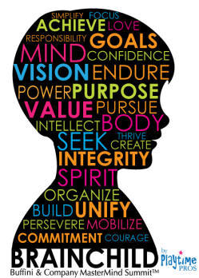
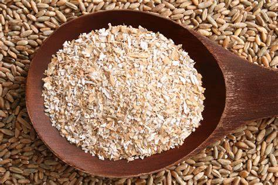

The brainchild of a person is an idea or invention that they have thought up or created.

Examples:
1. The encyclopedia was the brainchild of historian John C. McCormick.
2. The museum is the brainchild of a wealthy art collector.
2. Bran:
Bran consists of small brown flakes that are left when wheat grains have been used to make white flour.

Examples:
1. The bran is used for cattle-food and poultices, and the grain in the distillery.
2. The doctor told me to eat more bran because it is a good source of fiber.
2. Bran:
Bran consists of small brown flakes that are left when wheat grains have been used to make white flour.
Examples:
1. The bran is used for cattle-food and poultices, and the grain in the distillery.
2. The doctor told me to eat more bran because it is a good source of fiber.